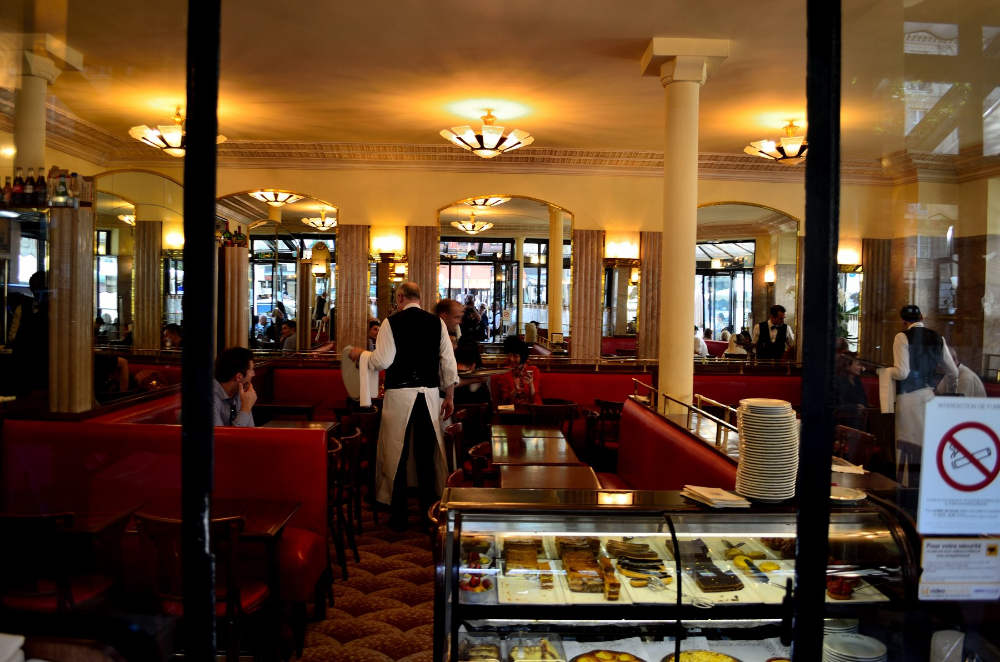
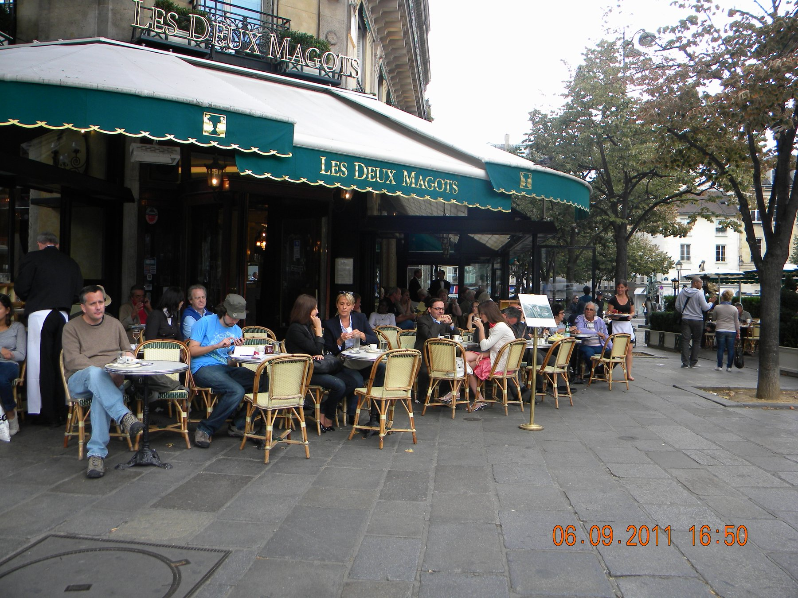
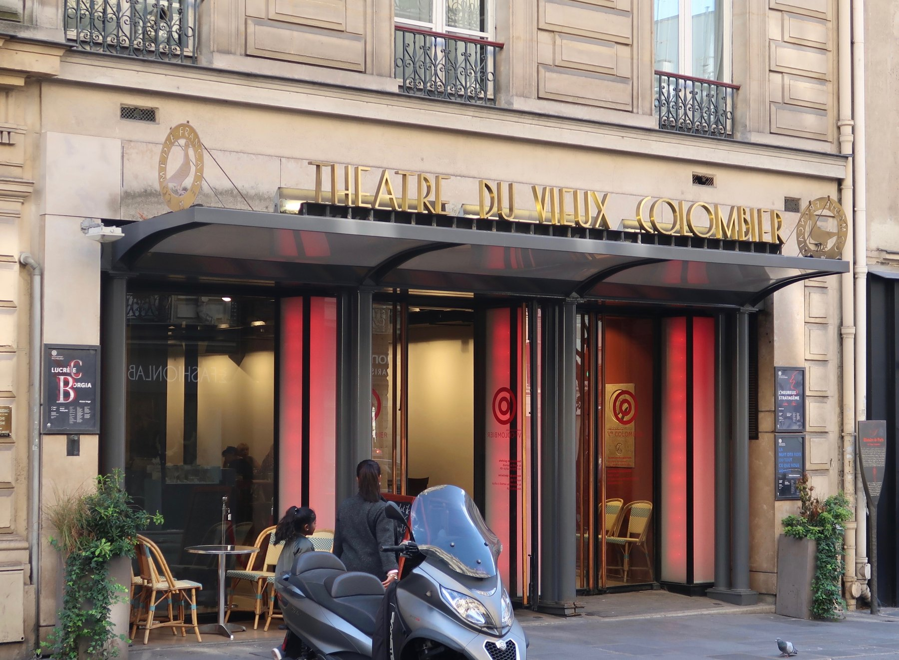
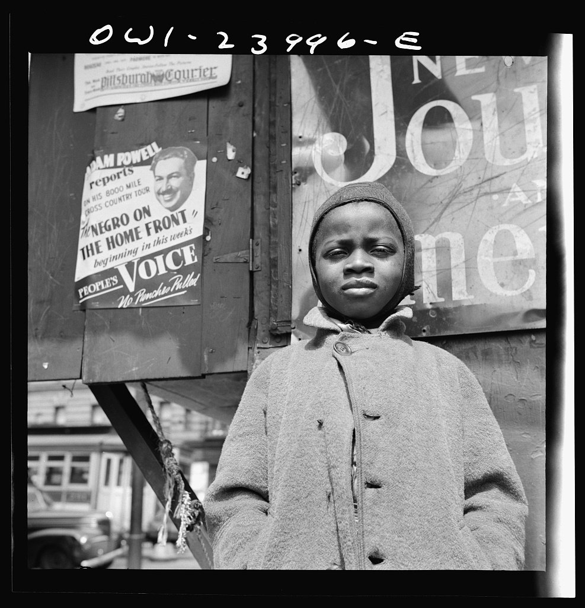

Thursday · Literature
(c. 1943–1960): literature after
After ’s broken sentence came war, , and . In Paris a press word — — stuck to novels and plays of , to , and to a public break between and .
{kind=link}
“” is a later press and classroom label. and used it; did not accept it as a school name for himself. had already used related language in 1943. This lesson looks out from occupied and post-Liberation Paris — cafés, a magazine, novels and plays of — then notices other 1950s literatures that were running at the same time. They are contemporaneous events, not a West-plus-Asia formula. is the previous Thursday in this archive; it is not repeated here.
Select any words, or tap a dotted term.
- 1938 La Nausée ’s novel appears. A forerunner written before the war that later readers folded into the postwar label.
- 1942–43 L’Étranger / L’Être et le Néant ’s novel (1942). ’s (1943). Paris is the room, not only the theory.
- 1944 Huis clos / Liberation premieres at the , 27 May. Paris is liberated in August.
- 1945 Les Temps modernes First issue, October. Named after ’s . A magazine becomes an institution.
- 1947–49 La Peste / Le Deuxième Sexe ’s (1947). ’s (1949), first serialized in .
- 1951–52 The break ’s (1951). ’s review in (May 1952); and exchange open letters (August). Friendship ends in public.
- 1952–53 Elsewhere / Paris ’s (1952). ’s (1952). ’s (1953), written in Paris.
- c. 1960 The label thins and other Paris fashions take the prestige slot. The press word goes stale. This lesson stops before a full postmodernism chapter.
Before
A broken sentence, then a political decade, then a war
had already broken the ordinary novel sentence. , , and made time and attention into structure; vernacular Chinese modernism was running in the same years. That work is another Thursday in this archive. What stands between those experiments and the books in this lesson is not a clean handover. The 1930s put politics back into the foreground of fiction and reportage: ’s (1938), ’s (1940), ’s (1939). Those titles are named here as the immediate literary past, not as a second lesson. Then came defeat, , collaboration, deportation, and camps. By 1944 the question for many French writers was not how to fragment a day on the page. It was what a person was free to do inside a that had already chosen them.
{kind=link}
’s novel had already appeared in 1938. It belongs in this lesson as a forerunner, not as a product. years then forced the argument into public rooms: heated cafés when hotels were cold, a theatre still open in May 1944, a Resistance paper, and, after August, a city that had to invent what “after” meant.
The era
Occupied Paris, Liberation, and a press word
The trigger is concrete. Under , and wrote at the because the upper floor stayed warm when charcoal and hotel heating failed. — — opened at the on 27 May 1944, still under German control of the city. Three characters locked in a Second Empire drawing room discover that they are one another’s torture. The line everyone remembers, “,” is a joke with philosophical teeth, not a poster about hating company. In August the city was liberated. The photographs of soldiers on the are the public fact. The literary fact is what a circle of writers did with the next fifteen years.

{kind=link}

.jpg){kind=link}
In October 1945 published its first issue. The title came from ’s . directed; the board included , , , , , and . was busy with and was not on that masthead. The magazine serialized fiction and argument, printed ’s claims for , and later carried chapters of ’s . It was an institution in the plain sense: an office, a paper ration, a telephone number printed for visitors, and a place where a review could end a friendship in public.

{kind=link}
The word “” itself was partly a journalist’s convenience. had used related language in 1943. On 29 October 1945 gave the lecture later published as ; the room was crowded enough that the newspapers treated the word as a brand. and accepted a version of the name in public; kept saying he was not an existentialist in ’s sense. The useful literary unit is not the beret. It is the novel and the play of : a character thrown into a set of constraints — a beach, a plague city, a locked room, a sexed body, a colonized gaze — and forced to choose without a guaranteed script.
How it showed up
Novels and plays of situation — and three to read slowly
Name the shelf without pretending it is one committee. : (1938 forerunner), (1943), (1944), the editorials, (1948), (1952). : novels, memoirs, and (1949). : (1942), (1942), (1947), (1951). Beside them: ’s plays and prose; ’s (Paris, 1953), adjacent theatre rather than ’s school; ’s philosophy in the same offices; ’s (1952), with (1961) at the far edge; in Paris writing (1953). In Japan, was reading French literature and as a student in the late 1950s; ’s (1962) sits just after this lesson’s center and works a confinement problem that later readers filed beside . Those Japanese names are contemporaneous writers facing related pressures after defeat and — not an assigned Asian twin for a Paris trio.
Jean-Paul Sartre
1905–1980
Novelist, playwright, philosopher, magazine director. He made “” and “” into tools a general reader could argue with. The 1967 photograph is not a 1944 document; it is a free portrait of the public man the earlier decade produced.
Venice, August 1967 — later than café years. The face the cameras kept.T1980 / Wikimedia Commons / CC BY 3.0
{kind=link}
Simone de Beauvoir
1908–1986
Philosopher and novelist; co-founder of . (1949) is a book of method — history, myth, lived reports — as much as it is a founding feminist text later waves would claim. A clearly free studio portrait from the 1940s is hard to license cleanly; this lesson does not invent one.
Albert Camus
1913–1960
Novelist, playwright, editor. and made and revolt readable as stories. He rejected the school name “existentialist,” then broke with in 1952 over . ’s 1945 portrait is treated as public domain in France on collective-work grounds; this capsule skips it rather than lean on a thin cross-border claim.
Richard Wright
1908–1960
(1940) belongs to the political-novel past. After the war he lived in Paris, knew and , and published (1953). An American writer in the same cafés, not a French mascot.
’s studio portrait, 23 June 1939 — before ’s Paris years. The face that made public.Carl Van Vechten / Library of Congress / public domain
{kind=link}
Deepen three objects. First, . ’s French is short, declarative, and cool: “Mother died today. Or maybe yesterday, I don’t know.” narrates heat, swimming, sex, and a funeral as if they were weather reports. The killing on the beach arrives with the same flatness. The trial then invents a moral personality the prose has refused to supply — he did not cry at his mother’s funeral, therefore he is a monster. The book’s force is technical: a style that will not perform the remorse the court demands. That is how gets into the sentences, not only into an essay.
Second, . ’s 1949 book is two volumes: how “woman” was made in biology talk, history, and myth, then how girls and women live that making. The famous line — one is not born, but rather becomes, a woman — is a claim about and becoming, written by a philosopher who had already co-run a magazine. Later feminism would take the book as an ancestor; that reception is real. The book itself is also literature and method: long readings, case descriptions, a refusal to treat “woman” as a timeless essence. Put it beside and as a postwar Paris object, not only as a chapter in a feminism syllabus.
Third, the – break. appeared in 1951. In May 1952 reviewed it harshly in . answered with a letter addressed not to but to “Monsieur le Directeur” — . In the August issue answered at length and with personal heat. The friendship ended in the magazine that had defined their public. The argument was about revolt, history, and Marxism; it was also about who owned the postwar moral microphone. Treat it as a literary-political fact with dates, not as a celebrity feud with no content.
Same time elsewhere
Other 1950s rooms, not a formula
While Paris argued about , other literatures were not waiting for a French cue card. In the United States, ’s (1952) sent a nameless narrator through a Southern college, a movement, and a basement with 1,369 lights. The book’s problem is American racial invisibility under and Northern hypocrisy. It is not a translation of . ’s wartime photographs — a newsboy before posters for and the — are the visual weather of that American , taken a decade earlier and still the right street.

.jpg){kind=link}
In Britain, the press found “” after ’s opened at the in 1956. Class resentment and a kitchen sink are the furniture; Saint-Germain is not. In Japan, writers who had lived defeat and were publishing through the 1950s; ’s early fiction and Abe’s later sand-pit novel are named here as parallel pressures, not as proof that was universal. Latin American boom novels of the 1960s are later and are not forced into this capsule.
After
The label thins; the books remain
By about 1960 the Paris prestige slot was moving. — and the arguments that followed — took the seminar glamour. “Existentialist” became a costume in the newspapers: a jazz cellar, a black sweater, a simplified . died in a car crash on 4 January 1960. lived long enough to refuse the in 1964 and to become a different kind of public monument. The useful after is not yet postmodernism as a full lesson. It is this: the novels and plays still work when the beret joke is gone, and other cities had never needed the beret to write their own situations.
If this archive takes another Thursday further on, it will not be to complete a French syllabus. It will be because another year also happened.
A question
A question to keep asking
When a magazine can end a friendship in public, what is literature being asked to do that a private letter cannot?
Fun fact
Les Temps modernes took its name from a Chaplin film
When ’s circle settled on a title for their new review in late 1944, they chose — — after ’s 1936 film. The first issue appeared in October 1945, after paper shortages delayed it. The board included , , , , , , and . A comedy about factory life became the letterhead of a magazine that argued for . The film is still the easier object to name than the paper ration.